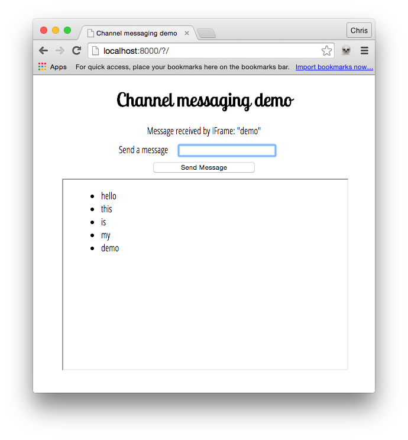

The Channel Messaging API allows two separate scripts running in different browsing contexts attached to the same document (e.g., two IFrames, or the main document and an IFrame, or two documents via a SharedWorker) to communicate directly, passing messages between one another through two-way channels (or pipes) with a port at each end. In this article we'll explore the basics of using this technology.
Use cases
Channel messaging is mainly useful in cases where you've got a social site that embeds capabilities from other sites into its main interface via IFrames, such as games, address book, or an audio player with personalized music choices. When these act as standalone units, things are ok, but the difficulty comes when you want interaction between the main site and the IFrames, or the different IFrames. For example, what if you wanted to add a contact to the address book from the main site, add high scores from your game into your main profile, or add new background music choices from the audio player onto the game? Such things are not so easy using conventional web technology, because of the security models the web uses. You have to think about whether the origins trust one another, and how the messages are passed.
Message channels on the other hand can provide a secure channel that a single data item can be sent down, from one browsing context to another, after which the channel is closed. The sending context asks the receiving context for the capability to send a single message. At the receiving end, this message is actioned as appropriate (for example as "add a contact", or "share high scores".)
Note: For more information and ideas, the Ports as the basis of an object-capability model on the Web section of the spec is a useful read.
Simple examples
To get your started, we have published a couple of demos on Github. First up, check out our channel messaging basic demo (run it live too), which shows a really simple single message transfer between a page and an embedded <iframe>. The embedded IFrame then sends a confirmation message back. Second, have a look at our multimessaging demo (run this live), which shows a slightly more complex setup that can send multiple messages between main page and IFrame.
We'll be focusing on the latter example in this article. It looks like so:

Creating the channel
In the main page of the demo, we have a paragraph and a simple form with a text input for entering messages to be sent to an <iframe>.
var para = document.querySelector('p');
var textInput = document.querySelector('.message-box');
var button = document.querySelector('button');
var ifr = document.querySelector('iframe');
var otherWindow = ifr.contentWindow;
ifr.addEventListener("load", iframeLoaded, false);
function iframeLoaded() {
button.onclick = function(e) {
e.preventDefault();
var channel = new MessageChannel();
otherWindow.postMessage(textInput.value, '*', [channel.port2]);
channel.port1.onmessage = handleMessage;
function handleMessage(e) {
para.innerHTML = e.data;
textInput.value = '';
}
}
}
When the IFrame has loaded, we run an iframeLoaded() function containing an onclick handler for our button — when the button is clicked, we prevent the form submitting as normal, create a new message channel with the MessageChannel.MessageChannel constructor, then send the value entered in our text input to the IFrame via the MessageChannel. Let's explore how the window.postMessage line works in a bit more detail.
For a start, here we are calling the window.postMessage method — we are posting a message to the IFrame's window context. window.postMessage has three arguments, unlike MessagePort.postmessage, which only has two. The three arguments are:
- The message being sent, in this case
textInput.value. - The origin the message is to be sent to. * means "any origin".
- An object, the ownership of which is transferred to the receiving browsing context. In this case, we are transferring
MessageChannel.port2to the IFrame, so it can be used to receive the message from the main page.
At the bottom of the iframeLoaded() function there is a MessagePort.onmessage handler, but we'll get to that later.
Receiving the port and message in the IFrame
Over in the IFrame, we have the following JavaScript:
var list = document.querySelector('ul');
onmessage = function(e) {
var listItem = document.createElement('li');
listItem.textContent = e.data;
list.appendChild(listItem);
e.ports[0].postMessage('Message received by IFrame: "' + e.data + '"');
}
The entirety of the code is wrapped in a window.onmessage handler, which runs when the message is received from the main page (via its postMessage().) First we create a list item and insert it in the unordered list, setting the Node.textContent of the list item equal to the event's data attribute (this contains the actual message).
Next, we post a confirmation message back to the main page via the message channel, using e.ports[0].postMessage(). How does this work? Earlier we transferred port2 over to the IFrame — this is accessible in the event's ports attribute (array position [0]). We call MessagePort.postMessage on this port — since port2 is being controlled by the IFrame, and it is joined to port1 by the message channel, the specified message will be sent back to the main page.
Receiving the confirmation in the main page
Returning to the main page, let's now look at the onmessage handler at the bottom of the iframeLoaded() function:
channel.port1.onmessage = handleMessage;
function handleMessage(e) {
para.innerHTML = e.data;
textInput.value = '';
}
Here we are setting port1's MessagePort.onmessage handler equal to the handleMessage() function — when a message is received back from the IFrame confirming that the original message was received successfully, this simply outputs the confirmation to a paragraph and empties the text input ready for the next message to be sent.
Specifications
| Specification | Status | Comment |
|---|---|---|
| WHATWG HTML Living Standard | Living Standard | No difference to the HTML5 Web Messaging spec. Channel messaging defined in section 9.5 |
| HTML5 Web Messaging | Recommendation | W3C version of the spec. |
Browser compatibility
| Feature | Chrome | Firefox (Gecko) | Internet Explorer | Opera | Safari (WebKit) |
|---|---|---|---|---|---|
| Basic support | 4 | 41 (41) | 10.0 | 10.6 | 5 |
| PortCollection | Not supported | Not supported | Not supported | Not supported | Not supported |
| Available in workers | (Yes) | 41 (41) | (Yes) | (Yes) | (Yes) |
| Feature | Android | Chrome for Android | Firefox Mobile (Gecko) | Firefox OS (Gecko) | IE Phone | Opera Mobile | Safari Mobile |
|---|---|---|---|---|---|---|---|
| Basic support | 4.4 | 4 | 41.0 (41) | Not supported | 10.0 | 11.5 | 5.1 |
| PortCollection | Not supported | Not supported | Not supported | Not supported | Not supported | Not supported | Not supported |
| Available in workers | (Yes) | (Yes) | 41.0 (41) | (Yes) | (Yes) | (Yes) | (Yes) |